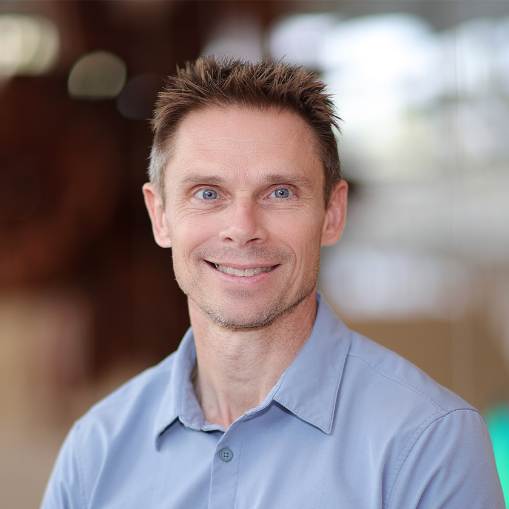

David Suggett
Director, KAUST Coral Restoration InitiativeProfessor of Practice · KAUST
Coral ecologist connecting reef science with practical restoration. Co-founder of the Coral Nurture Program, with expertise in coral health, propagation and approaches that support community-based conservation.
- Coral restoration
- Reef ecology